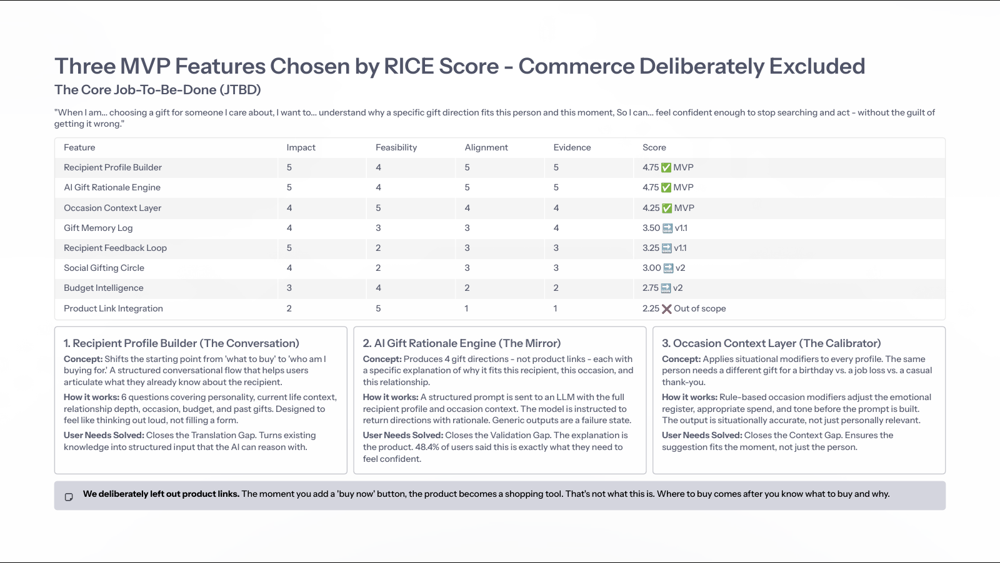

The problem wasn't finding a gift. It was feeling sure.
Existing gifting tools primarily optimize for discovery: catalogues, wishlists, quizzes and AI-generated lists. The case study reframes the job as a confidence problem: the giver often knows the recipient, but struggles to translate that knowledge into one decision they feel good about.
Research validated the anxiety hypothesis.
The primary research covered real gifting behaviour rather than hypotheticals. The strongest signal was not a lack of ideas; it was low confidence and a desire for contextual reasoning.
Last-minute is common
9 of 31 (29%) decide the same day or at the last minute; 17 of 31 (55%) had bought something last minute.
Discovery creates noise
19 of 31 (61%) search Google/Amazon first, while 13 of 31 (42%) reported becoming more confused afterwards.
Certainty is the missing layer
Only 4 of 31 (13%) felt fully confident about their last gift decision.
The “why” matters
15 of 31 (48%) said an explanation of exactly why a gift fits the person and occasion would make them confident.

Focus on the relationship-conscious gifter.
The target is behavioural, not demographic: people who care about what a gift communicates about the relationship and experience anxiety when they cannot translate what they know into a confident choice.
Knows the person, doubts the choice
Can spend 2–3 hours searching and still seek reassurance before checkout.
Runs out of thinking time
Realises the occasion is close, defaults to a familiar marketplace and buys something safe.
Contextual synthesis
Turn existing knowledge about the recipient into a useful direction.
Rationale-based confidence
Provide a reason, not just another recommendation.
Prioritize confidence before commerce.
The core JTBD was: “When I am choosing a gift for someone I care about, I want to understand why a specific gift direction fits this person and this moment, so I can feel confident enough to stop searching and act.”
MVP · RICE 4.75
Six conversational questions capture personality, current context, relationship, occasion, budget and past gifts.
MVP · RICE 4.75
Returns four gift directions with a specific explanation tied to the user's inputs.
MVP · RICE 4.25
Adjusts emotional register, spend and tone so the recommendation fits the moment as well as the person.
Commerce excluded from MVP
Product links were deliberately out of scope. “Where to buy” comes after knowing what to buy and why.
A conversation that ends in a reasoned direction.
The proposed flow replaces browsing with a short, structured conversation. The system gathers recipient context, applies occasion rules, sends the structured profile to an LLM and returns directions with rationale.

Who are you gifting?
Occasion selector + recipient name. Designed to start in under 30 seconds.
Tell us about them
One question at a time, designed to feel like thinking out loud.
Your 4 gift directions
Each card explains why it fits the recipient, occasion and relationship.
Refine or save
Regenerate, save, share and optionally rate confidence to improve future outputs.
Measure confidence formed, not sessions completed.
Because this is a product concept/prototype case study, these are proposed validation targets rather than claimed production outcomes.
Confidence Score
Post-session rating asking how confident the user feels about the gift.
Profile Completion
Target >80%; drop-off indicates the conversation is too long or difficult.
Action + return
Target >60% acting within seven days and >40% returning within 30 days.
Generic Output Rate
Keep outputs that feel “written for anyone” below 15%.

Trust is the product constraint.
AI rationale feels generic
Mitigation: every rationale must reference something specific the user told the product.
Low gifting frequency
Mitigation: occasion reminders and a future B2B use case increase frequency.
Edge-case quality
Mitigation: staged rollout across common occasions before expanding.
Confidence beats catalogue size
The strongest product opportunity is not another list of products; it is helping the user understand why a direction is right.